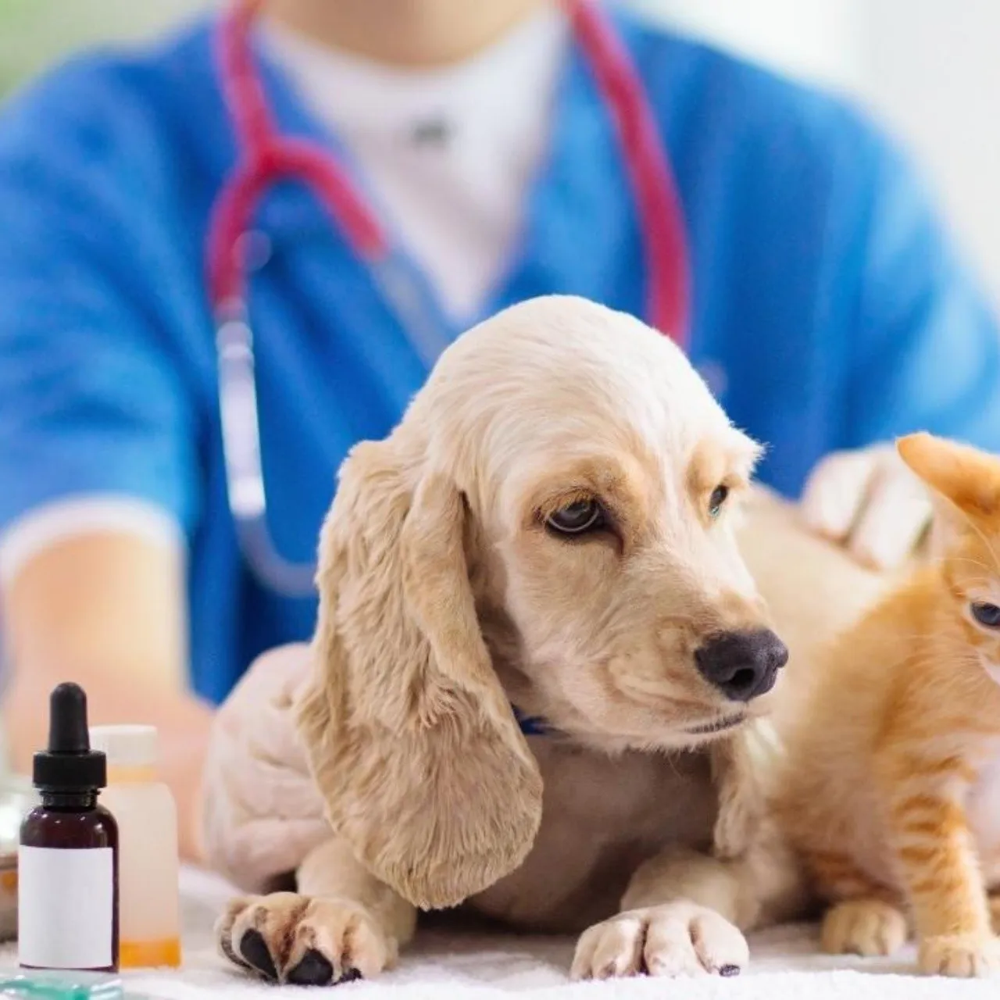

Recomendaciones
¿Qué pasa si las mascotas no están vacunados y desparasitados?
Los sistemas inmunitarios de los cachorros son muy débiles, y cualquier contacto con animales no vacunados podría ser fatal. Algunos dueños de mascotas piensan que para evitar riesgos basta con sacarlo a horas no concurridas, o por zonas por las que habitualmente no hay perros, como el campo o el monte.

¿Por qué razon deben recibir atencion veterinaria las mascotas?
Aunque los perros y los gatos son seres llenos de bondad, así como todos los animales, estos no están exentos de sufrir enfermedades terribles como el cáncer. Una visita al veterinario de forma frecuente te ayudará a prevenir este tipo de problemas.

¿Cuáles son los cuidados de las mascotas?
*Agua fresca disponible siempre y una buena alimentación.
*Cuidados médicos preventivos y en caso de enfermedad o accidente.
*Un espacio aseado con protección de las inclemencias del clima y un lugar cómodo para dormir.